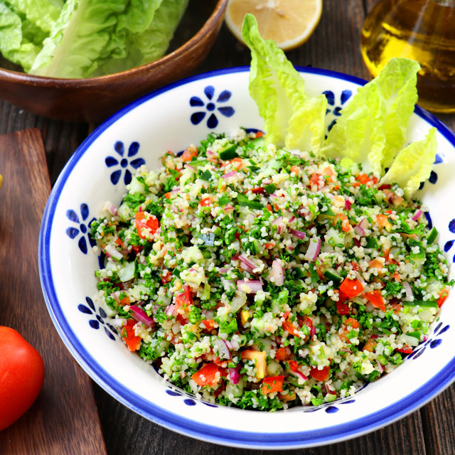

The Lebanese Dish Tabolah
Tabbouleh (Arabic: تبولة, romanized: tabbūla; also tabouleh, tabbouli, tabouli, or taboulah) is a Levantine salad made mostly of finely chopped parsley, with tomatoes, mint, onion, bulgur (soaked, not cooked), and seasoned with olive oil, lemon juice, salt and sweet pepper. Some variations add lettuce, or use semolina instead of bulgur.
Edible herbs known as qaḍb formed an essential part of the Arab diet in the Middle Ages. Dishes like tabbouleh attest to their continued popularity in Middle Eastern cuisine today. Originally from the mountains of Lebanon and Syria, tabbouleh has become one of the most popular salads in the Middle East.

Ingredients:-
- ½ cup bulgur
- 1 cup diced cucumber (1
- small-to-medium)
- 1 cup diced tomato* (1 large)
- 1 teaspoon fine sea salt, divided
- 3 medium bunches curly parsley
- ⅓ cup (⅔ ounce) chopped fresh mint
- ⅓ cup thinly sliced green onion
- ⅓ cup extra-virgin olive oil
- 3 to 4 tablespoons lemon juice, to taste
- 1 medium clove garlic, pressed or minced
Steps:-
- Cook or soak the bulgur until tender according to package directions. Drain off any excess water, and set aside to cool.
- Meanwhile, combine the diced cucumber and tomato in a medium bowl with ½ teaspoon of the salt. Stir, and let the mixture rest for at least 10 minutes, or until you’re ready to mix the salad.
- To prepare the parsley, cut off the thick stems. Then, finely chop the parsley and remaining stems—you can do this by hand, but it’s much easier in a food processor with the standard “S” blade. Process 1 bunch at a time (it should yield about 1 cup chopped), transferring the chopped parsley to a large serving bowl before proceeding with the next.
- Add the cooled bulgur, chopped fresh mint (if using) and green onion to the bowl of parsley. Strain off and discard the cucumber and tomato juice that has accumulated in the bottom of the bowl (this ensures that your tabbouleh isn’t too watery). Add the strained cucumber and tomato to the bowl.
- In a small measuring cup or bowl, whisk together the olive oil, 3 tablespoons lemon juice, garlic, and remaining ½ teaspoon salt. Pour it into the salad and stir to combine. Taste, and adjust if necessary—add another tablespoon of lemon juice for zing, or salt for more overall flavor.
- If you have the time, let the salad rest for 15 minutes before serving to let the flavors mingle. Otherwise, you can serve it immediately or chill it for later. Tabbouleh will keep well in the refrigerator, covered, for up to 4 days.